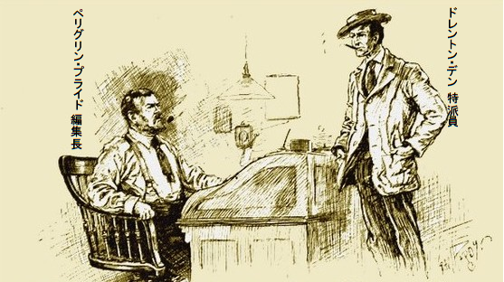
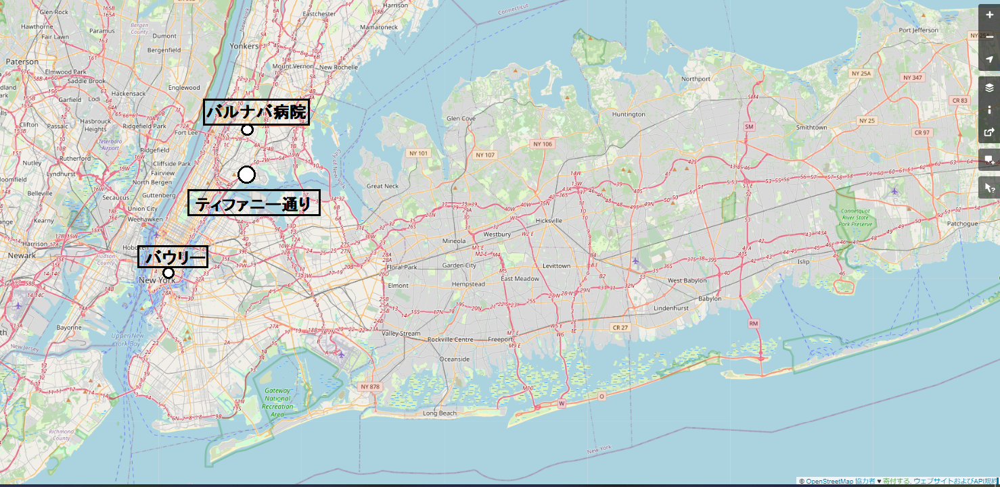
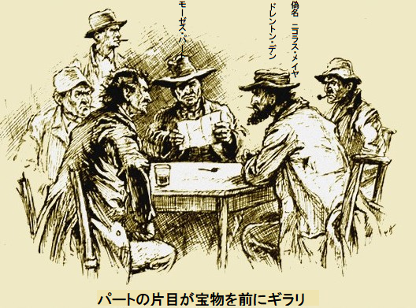
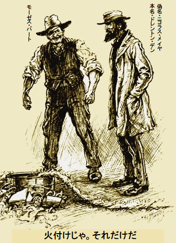
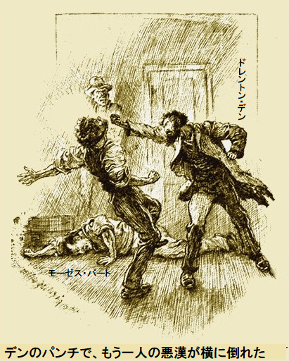
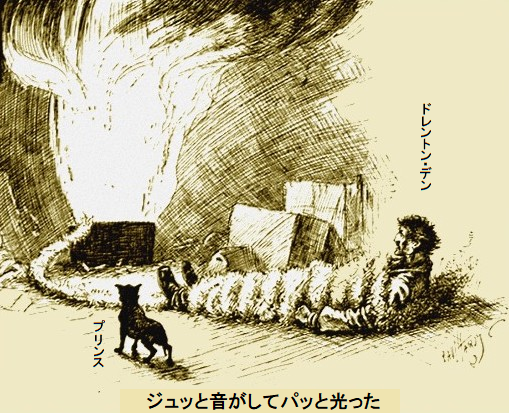
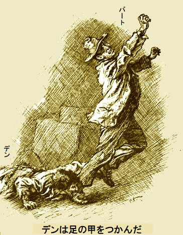

ドレントン・デン特派員がニューヨークポスト紙の編集室へぶらりやってきた。両手をノーフォークジャケットに突っ込み、
相手のお偉方は短い
「やあ、戻ったか」
と編集長が声をかけた。
デンが割り込んで、
「キューバからです。高くつきましたけど、面白い記事を二本持ってきました。費用検査はまっぴらですよ」
斜にかぶった汚い
「金なんかくそくらえ。ネタさえ持ってくればいい。とにかく戻って嬉しい。あの犬は君のか」
デンがうなずくと、指さす方に、もじゃもじゃの牧羊テリア犬が椅子の近くで丸まっていた。
「名前はプリンス。話す以外何でもできます。我々より優秀ですよ。で、仕事は？」
「はっきり言えば、度胸と勇気がいる。危険は君の大好物だよな。当然放火団は知ってるだろ。知らない？ そうか、とにかく承知の通り、ニューヨークの年間火災件数は、まあロンドンの比じゃない。噂を時々耳にするが、悪党組織があって、火付けを請け負い、結果として全焼を傍観し、何も手が打てない。当然、にせ在庫に保険を掛けており、保険会社から金をだまし取る」
「それが本当かどうかの調査ですね」
「おう、そういうことだ。一味の一人がここで
「なぜ奴はタレこまなかったのですか」
「サツはやる気がないからだ。しかもここへ来れば金になるし、復讐もできる。奴の名はジェイコブ・リスキだが、一味と
デンが食いついた。全ての材料がそろい、ヤマは面白そうだし、何はさておき記者
ポスト紙が暴露記事に専念するとき、金は二の次だ。
「ドイツユダヤ商人に化けます。にせ在庫と高額保険を仕立ててください。保険業者と掛け合ってうまくやってください。すぐ、リスキを呼んで会わせてください」

一日か二日のうちに準備が整った。ニューヨーク郊外で見つけたユダヤ紳士がドイツへ帰りたがっており、借家と在庫を処分してくれれば謝礼を払うという。
保険業界は当然、放火団に付け込まれない物件なら契約する。デンの変名であるニコラス・メイヤに対し、高額の保険証券を発行するのみならず、期間を三年に限定し、保険料を全額要求し、領収書を切った。
デンは新しいお店を数日ほっといた方がいいと考え、そのあと次に進むことにした。商売にはちっとも困らない。だって何もないもの。そして六日目の晩、暗くなって
背が低く、眼がぎらぎら邪悪で、流ちょうな話ぶりは生来の役者だ。数時間以内でリスキは、すぐ行動を起こしてくれとデンに告げて、こう締めた。
「これ以上協力できない。モーゼス・パート一味のアジトを教えよう。やり方さえ分かれば簡単なはずだ」
俺なら現場で衝突せずうまくやると、あわててリスキに確約した。
一時間後、周到に変装し単身で潜りこんだ。場所は不潔なバワリー街の酒場だった。
じっくり、目当ての男を探し始めた。そもそも奴らは極度に用心深く、疑い深い。だがデンはゲームの達人。夜が明けないうちに奴らに印象付けた。自分も同じ悪の

一晩か二晩おいてデンは思い切って酒場へ出かけた。モーゼス・パートは片目で
デンが奴らの手口を笑って聞きながら、ぐっと押し殺した衝動は、拳銃を取り出し、その場で奴らを始末してやりたい。奴らの話が本当なら、これまで保険会社は何百万ドルも奪われたに違いない。多くの火事で焼け死んだと大っぴらに自慢している。
デンがおずおず言った。
「俺のブツにも油をつけてもらいたいな」
モーゼス・パートが耳をそばだて、
「何を持ってんだ？ ああそういえば来てたな。最初の晩ここにいたろ」
と食いついてきた。
デンは店がティファニー通りにあると認め、現物在庫はないが、昔は繁盛したなどと、小指をぴくぴく曲げて
「保険証券はあるのかい」
とパートが猫なで声で
「一万ドルだ。三年物で、保険金は支払い済みだよ。見てくれ」
パートの片目が宝物を前にギラリ。まさに思うつぼ。それに三年物の保険証券は放火団に久々のお宝だった。

「おめえ、金はもらったも同じだ。半分はおめえ、残りは俺達だ。だがな、過信はしねえ。まず、おめえの在庫品と保険証券を俺の仲間に渡しな。そうすればやってやる。あした暗くなったら、おめえの店に行って段取りするぜ」
ドレントン・デンの職業本能が良い方に導くさまは、あたかも猟犬が確実に追跡するかのよう。いまや人生最大の特ダネに当たった。放火団がらみは何と
どこかで何か悪いことをしているらしいが、保険会社は得体の知れぬ支払いに戦々恐々だ。放火がじわじわ
ドレントン・デンですら、仲間にそっと加わるまで、そんなに大掛かりだとは知らなかった。人口当たりニューヨークの火事はロンドンの四倍だ。ただしロンドンは気温が低いので発火しにくい。火事による犠牲者はなお驚くべき比だ。
実際、放火団にしてみれば一人か二人、死んだ方がいい。犯罪を火事に隠せるし、疑惑もそらせる。事件に首を突っ込むほど分かったのは、まさしく悲劇の瀬戸際、欧州大陸へ
記者のダボハゼ根性でデンは新聞の為にもすべてを知りたかった。放火団の悪行を暴露し、一味を追い詰めるのはお手の物。いまよく分かったから、モーゼス・パートと仲間を逮捕、有罪にするには充分だが、やりかたはじっくり調べる必要がある。
遂にそのときが来た。ニコラス・メイヤを演じれば全てを目撃でき、その為、悪漢どもにティファニー通りの店を当てがった。保険証券を渡したから、モーゼス・パートはすぐやる。
二晩おいて、一台の荷馬車がティファニー通り六一一番地へやって来て、デンの
荷物は石油缶が一、二本、太い荒縄が数十メートル、浅底の木桶が数個、コルクがバケツに数杯。明らかに放火団の仕事は特殊技能だ。
「すぐ始めらあ。二時間あればどさくさの証拠はなんも残るめえ」
とパート。
デンは手順をまざまざ見た。四人の男が粛々と作業するさまは役割訓練を受けたかのよう。店は三階建て、すぐデンが気づいたのは、いっぺんに全階を燃やす。
店、いやむしろ倉庫だ、おっと倉庫は建物の裏にあるけど、そんな倉庫
次に荒縄の端を桶に突っ込んで、床に這わせた。荒縄には揮発油が擦り込まれている。うろこ蛇のように荒縄を上階に這わせ、手すりに絡ませ二階に入れ、ここでも別な桶に石油とコルクを入れ、一階のように設置した。さらに同じことを繰り返し、荒縄を三階の石油桶まで這わせた。桶の周囲には、パートと仲間が削りくずや、紙くずや、段ボール箱などを積み上げた。
「完了。残り一つだ」
とパートがすごんだ。
デンがパートを見た。
「残りは何だ？」
とデンがいぶかって
パートがすかさず応じて、
「火付けじゃ。それだけだ」

デンは完全に分かっていなかった。正義じゃない気は若干したが、完璧な記者として、詳細を見ないわけにはいかない。大衆が細かいところを知りたがるのは充分承知。
「地階へ降りりゃ、見せてやる。三階いっぺんに燃してやるぜ」
「ああ」
またしてもパートの顔に不気味な笑いが走り、
「すぐ分かるぜ。あっちの桶に
「よく分かった。天才だ。まねできないはずだ」
「おめえに教えるものはもうないだろ？」
デンがふと見上げた。パートの
「もうない」
「そうか、満足したか。じゃあ、放火団の手際が全部わかったな。てめえを呼んだのはお約束の保証人にする為だ、新聞の為じゃねえ」
「一体どういうことだ？」
「おっ、いまさら何だ、ドレントン・デンさん」
デンは全身の筋肉が緊張して震えた。一言も答えないのは行動派のせい。パートが言い終わらないうちに、猫のように飛びかかった。鋼鉄のように
デンは周りを見渡し、二人目の悪漢の側頭部を一撃すると、横に倒れた。扉へ走った。途中、三人目の悪漢が足を突き出し、甲をすくったので、よろけて倒れてしまった。すぐ残り二人が覆い被さってきた。

そもそも勝ち目のない戦いだった。静寂を破るのは、はあはあと荒い息をする三人の男と、片隅でキュンキュン震えているデンの犬だけ。デンはありったけの力で暴れたが、ついに
デンの意識が戻ったとき、両手両足が革ひもで縛られていた。パートが醜い歯をむき出して、あご
「どうするつもりだ？」
とデンが小声で
「じき分かる。うまく化けても二、三日で正体がばれた。俺たちの秘密を探って、ディック・ダリーの子供を密告したように、密告するんだろ？ おう、おめえは賢いが、
デンがさえぎって、
「わかったよ。この釘は何だ？」
「おめえを床にくくりつけるためだ。おう、全部見せてやるぜ。この荒縄をおめえの体に巻きつけて、火がてめえの体を通って登るようにする。ちょっと痛いだろうが、やるぜ。家がお前もろとも焼け落ちれば、俺たちがおめえの保険金をもらいに行くぜ、デンさんよ」
デンは喋りたいのをぐっとこらえ、引きつり笑いした。苦しみ生きたまま焼かれても、内心は満足かもしれない。保険証券に保険金を支払えと請求された男は全く不愉快なことだろう。
デンは自分の軽率を激しく
「上等だ。やれよ。当分俺は無力だ。でも怖くないぞ」
「そうか、怖くないか。立派な男を殺すのは残念だ。おめえのような男が一杯欲しいぜ」
デンは悪党に反論しなかった。そんなことは無駄、子供じみており、頭を軽くなぜるようなものだ。頭を使ってこそ、この世で独り立ちできよう。だから命ある限り希望があり、運が向いて逆風が弱まるかもしれない。デンの精神はとても強靭だ。
荒縄が肩までぐるぐる巻いていたので、やがて渦巻く炎に包まれ、破滅の進行は止められないだろう。床に横たわり、極悪非道な拷問の苦痛に震え、遂には家が崩れて、慈悲深くも意識不明になろう。
五分後、デンは床にごろんと固定され、両手両足を革ひもで巻かれ、釘で床に打ちつけられてしまった。両腕は体の横に固定された。タンタロスの苦しみの心地だ。両手を振りほどこうとする望みは気分が重くなるだけ。パートが己の
「てめえ、もうすぐだ。逃げ出せたら、ポスト紙を有名にする記事を書けよ。いい気分だろ」
デンは
「ご親切なこっで。キサマ、俺がおじけづくと思ってんのか。出てけ、男らしく死なせろ。失せろ」
パートが去り際に、小馬鹿にお辞儀をして、
「あばよ。寒い夜だから、
デンが大声で笑った。なぜだかわからない。こんな危機状況で、あんなことを言われてもこたえない。がらんとした部屋にカツカツと靴音がして、扉がバタンとしまった。
デンがさっと動いた。革ひもを引くと、腕が擦り切れ真っ赤になり、結局中止。どっと涙が出た。悔し涙、血の涙、怒りの涙だが、怖くはない。いかんともしがたい無力を泣いて忘れた。
何か暖かいものが頬の涙をペロペロなめている。よだれをキスされ、なぜだか分らないが、妙に気持ちが落ち着いた。思いがけずテリア犬が来て、慰められた。でもこんなひどい状況下、犬は全く助けにならない。
「プリンス、どうやってここへ来たんだ？」
犬がキュンキュン鳴き、全身を震わせた。犬知恵でご主人が危ない。
「よしよし。お前は
横を見れば、導火線に火が付き、石油桶の方へ
火がカタツムリのように
そのとき、またしても狂気が魂をかき乱した。ひとしきりもがいて、全身汗びっしょりになった。自嘲気味に笑った。こんな状況下で、神経が不自然にはっきりしていたことは、いままでない。
デンの行動をお遊びと見たプリンスはワンワン吠えて周囲を跳ね回り始めた。デンの動きで荒縄がのたくり、これにプリンスが飛びつき、鼠のように振った。石油の刺激臭は不快だが、プリンスは興奮して何度もじゃれた。
「いいぞ、いいぞ。そこだ」
ジュッと音がしてパッと光るや、たちまち部屋は巨大な黄色い炎に包まれた。黒煙が天井に達した。油ススが黒い雪のように降った。石油桶に火が付き、不気味な

デンが歯ぎしり。見ると、荒縄の端が桶から滑り落ちて、床にゴロン。わずかなチャンスだが、火がつかないかもしれない。
だがその望みもすぐ消えた。青い炎がジジと音を立ててデンの方向に踊ってきた。
だがそれも一瞬、また強靭な精神が戻った。デンのような粘り強く精力的な気質は簡単に崩れない。希望、希望だ。命がある限り希望がある。
焼かれて丸焦げになると分った。ショックで死ぬかもしれない。だが、しょぼい人間機械は簡単に調子が狂うけれども、驚くべきことに、どんな事にも耐え、命は
死んでたまるか、気絶してたまるか。依然として石油は激しく燃え、コルクの青い炎が上下している。真っ黒な煙が部屋中に漂い、逃げ道を求め、最後に角の高所窓、つまり天窓から抜けていく。パート一味は放火に
炎の先端が足に来たとき、デンは身震いした。辺りは炎、衣服を焦がし、巨大な白煙が体の周りで、渦巻いている。
断末の苦しみは強烈で、激しく、身を切り裂くようで、デンは頭から足まで汗びっしょりになった。まだ意識はある。火が腰まで来ても、ほとんど超人的な力でじっとしていた。そしてわざと手を炎にかざした。革の焼ける臭いがして、手を縛っている革が溶けた。勝ったと思い、猛烈な狂喜に酔いしれた。
手首が自由になり、腕を投げ出した。
希望が湧くさまは
「ダメか、やはり。早々とここにくくられ、床に足かせをされた独房の囚人だ」
全ては数秒のことだった。いま第一桶が燃え落ち、火のついた油が硬いオーク床を流れてきた。反対側の荒縄は、真っ赤な円錐状の炎が階段を駆け上がっている。
そのあとを、プリンスが追って激しく吠えた。ふとデンに考えが湧いた。まだチャンスがある。
「噛め、噛め。鼠、鼠だ。噛み殺せ、プリンス」
犬が以前にもまして吠えた。火の回ってない先端の荒縄をくわえ、力強く引っ張り始めた。負けない覚悟だ。鋭い歯で、縄に食らいついている。ブスッと裂ける音がして、縄が切れた。
デンが雄叫びを上げた。プリンスも大声でほえた。犬を呼び、もじゃもじゃ頭にキスした。
「いい子だ。俺の命を救ってくれた。金の首輪に十六個の穴をあけてダイヤモンドと宝石をつけてやろう。おっとバカなことを。とにかく火は来ない。お前が
デンはそれ以上言わなかった。床が大きく上下し、奈落の底に落とされる気がした。大量の星がチカチカ眼前におどり、海のような潮鳴りがする。
反動が来て、デンは気を失った。プリンスは座り込み、黒鼻をクンクンさせ、じっとしている。全身の毛を逆立て、興奮して待機している。
正気に戻ったとき、意識を失ってから何年も経ったような気がした。手をあごに当て、リップ・ヴァン・ウィンケルのようにあご
放火団は地階に関する限り、計算違いした。というのも、桶の石油が燃え尽きても、頑丈なオーク材の床は皮を剥ぐ程度だった。木の焼けた臭いがデンの
デンは傷跡が痛み、ひどく苦しんだ。だがわき上がる狂喜はさすがに隠せなかった。全く砂粒ほどの脳みそと、偶然の幸運で火を食い止めた。
依然として、床から逃れられない。足首の革紐を釘打ちされた囚人だ。手が
「残念だ。奴らは遠くへ行くまい。やがて引き返し、一人か数人で火事跡を見に来る。どこへ隠れようか」
と独り言。
それでも、デンは気を
プリンスが立ちあがりブルッブルッ、耳をぴんと立て、歯をむいてうなった。
デンが犬を軽くたたいて、
「おすわり、おすわり、声を出すな」
犬が忠実に身をかがめた。デンは死んだように脇に横たわった。男が一人、ゴム
ヒッヒッと笑う仕草はまさしくパート。
「くたばりやがった。哀れな家主は焼死、
横たわった体を足蹴にした。その瞬間、家中に断末魔の叫びが響き渡った。どんな男にも隠れ潜む凶暴性が、この瞬間デンに起きた。
ほんのわずかなチャンスにデンは賭けた。瞬時にパートの足をつかみ、アキレス

パートが片方の足で激しく蹴った。デンは足の甲をつかみ、床にドタンと倒した。一時もあごの力を
「チクショウ、いてえ」
「俺の足首の革紐を切らないと、もっと痛くなるぞ。いまキサマの方が不利だ。噛みついて離さんぞ。ナイフで革紐を切れ」
足の激しい痛みに震えて、パートはポケットからナイフを出した。パートが生皮を切ってる間に、デンは奴の尻ポケットから拳銃をうまく抜き取った。
手足が遂に自由になった。ジンジン痛み、やっと立ち上がると、パートがナイフを手に飛びかかってきた。だが、さっと拳銃を向け、
「下がれ、さもないと撃つぞ。今度は俺の番だ。ポケットにマッチを持ってるだろ。窓の台にろうそくがある。明かりをつけろ」
パートが黙って従った。デンの声がバリバリ冷酷だったので反論できなかった。もしデンの調子が悪いことを知っていれば、向かってきただろう。実際は完全に
「さあ紙と鉛筆を取れ。テーブルだ。当然仲間がバワリーの巣窟でお前を待ってるだろ。すぐ俺の言う通りに書け。こうだ、『ニコラス・メイヤの所で失態。メモを見たらすぐ全員俺の所へ来い』 おっと、言う通りにしないとバラすぞ」
パートがおとなしく従った。メモを折り畳んで、子分へ宛てた。デンが窓を開け、通路を見て、通りがかったおあつらえの浮浪児を呼びとめた。
「一ドル稼がないか」
浮浪児は特に反対せず、使い走りに行った。ただメモを渡すだけのことだ。
警官が一人、ぶらぶら通りを歩いて来て、デンを不審そうに見た。
「どうかしましたか」
「第一発見者だ。凶悪事件だから、二、三日でアメリカ中が大騒ぎになるぞ。パトリック通りの警察署へ行って、猛者を四人連れてこい。頼む、急いでくれ」
十分後、四人の屈強な男がデンとパートを囲み、デンの話を聞いた。
デンは話しの途中、二回気を失ったが、もうそれはない。実はパートと二人だけでいるとき、これが起きないか恐れていた。
話し終わらないうちに、パートの仲間が何事かと駆けつけてきた。まんまとわなにかかったことも知らず、一味は拘束された。署長が手を差し伸べてデンを支えようとした。
デンがあわてて、
「大丈夫です。そんなに
「ですが、デンさん、あなたは……」
デンがすかさず、
「まっすぐバルナバ病院へ。欲しいのは元気が出る強力な薬と、いいタイプライターです。ポスト紙に記事を書いたら休みます。是非分かってください」
ポスト紙が翌朝全容を報じたのはデンの勇気と決意のたまもの。ニューヨーク中が記事の暴露に騒然としているさなか、デンは丸刈りにされ、体温が三九度五分に上がり、うわごとを言いながらベッドに放たらかしだった。やはり、特殊だった。放火団のその後についてはニューヨーク警察の記録にない。いったい誰の指図？
了